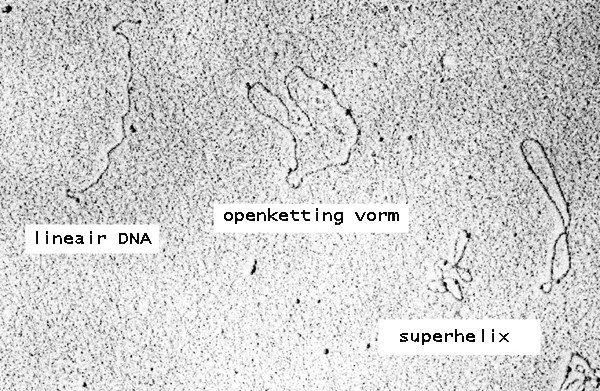

Bioteknologji - Senior - M3 — Validimi


- Validimi tregon se metoda funksionon për qëllimin
- Parametra: saktësi, precizion, specifikë, linearitet, LOD, LOQ
- Kontrolle pozitive dhe negative
- Replika (p.sh. n=3) dhe statistikë
- GMP/IQ-OQ-PQ për pajisje